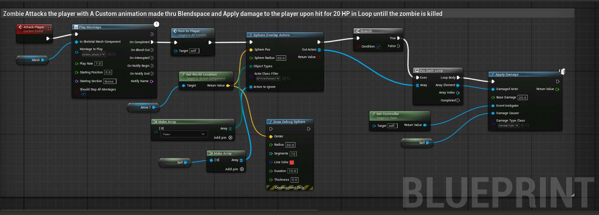
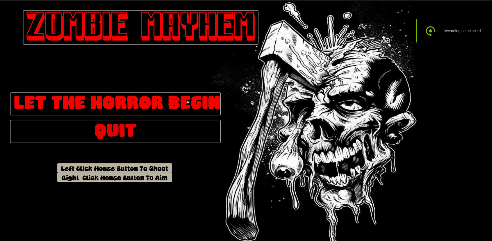
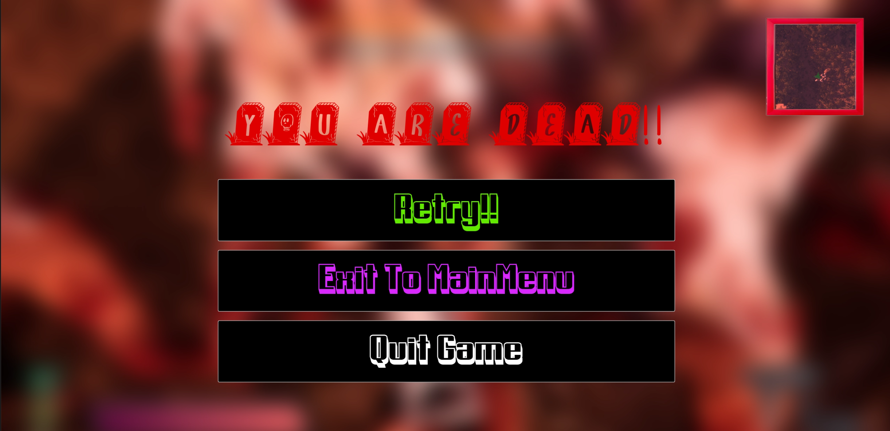

Zombie Mayhem is a first-person survival shooter developed solo in Unreal Engine 5 using Blueprints. Designed around a wave-based progression system, the game challenges players to survive against relentless hordes of zombies with escalating difficulty, reactive combat, and immersive feedback systems.
Unreal Engine 5 - Blueprints - Solo Development
| Project Overview | |
|---|---|
| Skills | Project Management · Game Design & Player Feedback · User Experience (UX) · UX Design & Evaluation · Unreal Engine – Blueprints & UMG |
| Development | Entire project created solo, showcasing end-to-end development skills in Unreal Engine 5. Fully Blueprint-based systems, demonstrating strong design logic and technical implementation. |
| Game Engine | Unreal Engine 5 with Blueprints for rapid prototyping and gameplay systems. No C++ code required - all systems implemented visually. |
| Core Systems |
Wave System: Dynamic wave generator continuously ramps up challenge with larger groups and tougher enemies. Combat: Trace-based shooting with recoil, precise hit detection, and immersive VFX for muzzle flashes and impacts. AI: Autonomous enemy AI designed entirely in Blueprints using Pawn Sensing to detect, chase, and engage players. |
| UI & Feedback | Interactive HUD built with UMG featuring health bar and functional minimap. Animated screen transitions, wave progression alerts, and win/lose state notifications. |
Core Gameplay
The game centers around surviving increasingly difficult waves of zombies in a post-apocalyptic floating island setting:
- Wave System: A dynamic wave generator continuously ramps up challenge with larger groups and tougher enemies as rounds progress. Waves spawn from two separate locations, doubling zombies with each wave.
- Combat Mechanics: Implemented responsive, trace-based shooting featuring recoil, precise hit detection, and immersive VFX for muzzle flashes and impacts. Different damage for headshots and body shots.
- Player Health System: Includes damage overlays for visual feedback, health regeneration mechanics (5 HP every 5 seconds until 50 health), and a full fail state when the player is overwhelmed.
Artificial Intelligence
Fully autonomous enemy AI designed entirely in Blueprints:
- Pawn Sensing: Zombies utilize Pawn Sensing to detect, chase, and engage players. They switch from slow walk to fast run when player is in acceptance radius.
- Behavior States: Enemies transition between idle, chase, and attack states, ensuring varied encounters and reactive gameplay. Running animations and zombie sounds enhance immersion.
- Attack System: Zombies attack the player with custom animations made through Blendspace, applying 20 HP damage in a loop until the zombie is killed.
- Death Animations: Zombies fall to the ground and remain for 5 seconds before disappearing, adding to the game's realism.

User Interface & Feedback
Comprehensive UI system built with UMG:
Interactive HUD
- Health Bar: Visual health indicator with animated feedback
- Minimap: Functional minimap displaying player and zombie positions for situational awareness
- Wave Progression: Animated wave starting events with custom animations using render opacity transitions
Game Flow Feedback
- Screen Transitions: Smooth animated transitions between game states
- Win/Lose States: Custom death and win screens with smooth animations
- Blood Overlay: Blood effect overlay animation appears when health goes below 50, using render opacity for smooth transitions
- Retry/Exit Options: Clear navigation options after death or victory


UX Improvements & Development Highlights
The project implemented numerous UX improvements based on Celia Hodent's principles from The Gamer's Brain:
Enhanced Zombie Behavior
- Zombies now have running animations and play zombie sounds
- Use pawn sensing to chase player upon sight
- Switch from slow walk to fast run when player is in acceptance radius
- Enhances anticipation and immersion through clear audiovisual cues
Blood Hit Effects
- Blood effect and hit animation play upon shooting a zombie
- Provides clear and immediate feedback for damage output
- Reinforces player actions through clear visual feedback
Dynamic Movement Animations
- Different walk speeds and unique animations for idle and aiming states
- Uses blend spaces and animation montages for smooth transitions
- Supports usability and perception principles by offering clear visual transitions
Shooting Feedback
- Gun movement animation when firing
- Gun sound effects upon shooting
- Bullet line trace through vector for accurate shooting mechanics
- Different effects upon hitting different surfaces
- Different damage for headshots and body shots
Health Regeneration & Damage Effects
- Blood effects appear when player health is below 50
- Regeneration system restores 5 HP every 5 seconds until 50 health
- Adds strategic survival element and sense of recovery

Game Story
The survival shooter is set in a post-apocalyptic Floating Island where the player must survive waves of zombies. The goal is to eliminate all zombies while managing health and ammunition, with increasing difficulty through a wave system.
Technical Implementation
Core Blueprint Systems
Key Blueprint References:
├─ BP_Zombie: Zombie AI, attack logic, death animations
├─ BP_FirstPersonCharacter: Player movement, shooting, health
├─ ZombieGameMode: Wave spawning and progression
├─ MainWidget_W: UI system with health bar and minimap
└─ WB_Minimap: Minimap functionality with player/zombie trackingBlueprint Highlights:
- Zombie AI: Custom event for health regeneration, pawn sensing for detection, blendspace animations for movement states
- Combat System: Line trace shooting mechanics, surface-based hit effects, headshot/body shot damage differentiation
- Wave System: Custom events for wave updates, timer-based spawning from multiple locations, difficulty scaling
- UI System: Render opacity animations for smooth transitions, custom events for win/lose states, minimap position tracking
Asset Sources
The project utilized the following assets from various sources:
- Foliage Level Map: Starting point from Assignment 2 (Fab.com)
- VFX Pack: Blood and surface hit animations (Fab.com)
- Character Assets: Zombie character mesh, zombie animations, and first-person character animations (SmartPoly)
- Gun Asset: Weapon model and animations (Fab.com)
- UI Elements: Player health bar, minimap cursor, and crosshair assets (Fab.com)
All gameplay systems, AI logic, wave management, and UI functionality were implemented from scratch using Blueprints.
UX Testing Results
During UX testing, a non-classmate player was given the opportunity to play the game without prior instructions:
- Positive Feedback: Player responded positively to enhanced zombie behavior, noting the sense of urgency created by running animations and zombie sounds
- Blood Hit Effects: Well-received for providing immediate and satisfying feedback when shooting zombies
- Dynamic Movement: Player adapted quickly to different movement states, particularly when switching between idle and aiming
- Wave System: Increased engagement as difficulty escalated with each wave
- Health System: Health regeneration and blood overlay helped player understand status without focusing solely on health bar
- Minimap: Proved particularly useful for spatial awareness and strategic movement planning
Future Improvements Suggested: Distinct hitboxes for head and body shots to make aiming more strategic, and ammo restriction or reload mechanic to introduce resource management.
Development Highlights
- Solo Development: Entire project created solo, showcasing end-to-end development skills in Unreal Engine 5
- Blueprint-Based: Fully Blueprint-based systems, demonstrating strong design logic and technical implementation without C++
- Balanced Focus: Balanced focus on gameplay, AI, and UI, ensuring a complete, playable survival experience
- UX-Driven Design: All improvements grounded in established UX principles (Hodent's perception, cognition, and motivation principles)
- Iterative Development: Multiple rounds of UX testing and refinement based on player feedback